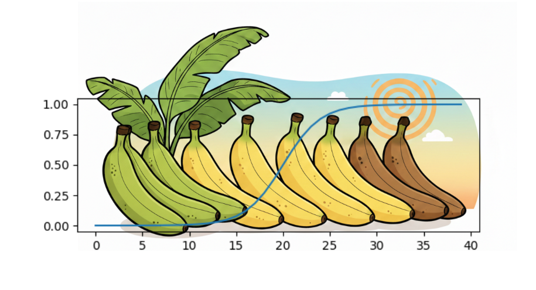
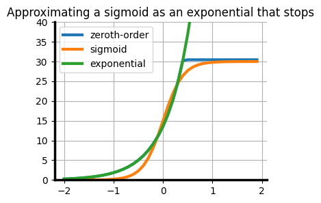
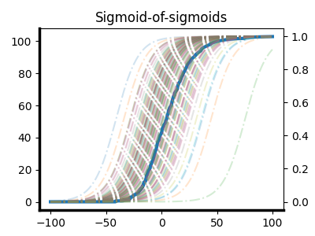

A few thoughts on modelling exponential and saturating processes
Nature abhors an exponential. The reachable universe, while very large, is not infinite, and at the end of the day any system that exhibits exponential growth will eventually exhaust whatever resource was fuelling it and peter out. This cycle of exponential growth followed by a plateau is characterized by a sigmoid, a shape familiar to anyone who has taken a calculus course.
Exponential growth takes the mathematical form \(e^{rt}\) (r for rate, t for time), which has the nice symmetry of \(dP(t)/dt = rP(t)\). The sigmoid places a constraint on this exponential growth given by some carrying capacity \(K\) (for example, the population of deer in Yosemite park is upper bounded by the amount of shoots and berries available to eat). The rate of growth of the population \(\frac{dP}{dt}\) is \(rP(t)(1 - P(t)/K)\). Once \(P(t)=K\) this rate of growth will be zero. But as long as \(P(t)\) is well below \(K\), the \((1 - P(t)/K)\) term is basically 1, so growth looks exponential.
While you’re early in a sigmoid, it can be hard to tell exactly what \(K\) is going to be. The \(P/K\) damping term is going to be much smaller than the inherent noise in your measurements for most of the time that it would be most valuable to be able to predict how many orders of magnitude grater \(P\) might become. You need your growth to deviate significantly from exponential before you can be confident, although at that point the value of the information of knowing \(K\) is going to be a lot lower.
One thing that might be surprising to the wannabe evolutionary psychologist is why exponential growth patterns are so unintuitive to humans despite making up a large fraction of the natural phenomena in the world we inhabit. But upon closer inspection I don’t think this is as surprising as it might seem prima facie. You can get a very accurate approximation of a sigmoid as a piecewise linear function consisting of a line at zero, followed by a line with slope r/4 connecting zero to K, and then another flat line at K. Most of the exponential growth period occurs when the function looks like it is zero, so it’s invisible. By the time you see notice it, it looks like a linear function in a nice, aesthetic serif font. Since you can’t intervene on what you can’t see, it shouldn’t be that much of a surprise that evolution didn’t equip us with an intuitive grasp of functions with exponentials in them. It’s only now that we can track the growth of things when they are very small and very large that exponential growth (even the pseudo-exponential growth you get in the pre-saturation sigmoid) has become something that we need to reason about in our – if not daily, then at least annualized – lives.

By the time you notice most locally-exponential growth, it’s probably not exponential any more.Nonetheless, once you start looking at the world – especially from a scientific lens – sigmoids are everywhere. The divide between people who “get” exponentials and the people who don’t became especially salient during covid, when exponential growth suddenly became front and center in a lot of policy decisions. Even as someone who spent many years studying exponential functions in various forms, I would often still feel a bit of a thrill every time I checked ourworldindata in the morning and discovered that, indeed, case numbers were exactly following the same exponential trend that they were the previous day. You could figure out how well people had paid attention in math class by whether their response was “the numbers are trivial now so we shouldn’t worry” or “the numbers are growing at a rate such that if we don’t act now it won’t matter whether we’re worried beause we’ll all be sick”. Of course, the bad takes rarely went in the opposite direction. As far as I’m aware, there was no mainstream take that “the numbers are growing at a rate which means everyone in the world will have become ill with covid eight hundred and fifty times in the next two years so we need to invest heavily in studying the effect of long-term daily covid infection on pancreatic function.”
No small part of the comparative willingness of computer scientists to take exponential growth seriously is the fact that our entire field has been in one giant exponential curve for the past sixty years in the form of Moore’s law. Moore’s law is an interesting example of an exponential that does not emerge as a result of a sigmoid curve. Sigmoids slow down as they approach the carrying capacity because more and more bacteria are starving to death due to not being able to find increasingly limited food. Moore’s law is describing a different limiting exponential relationship: you need at least one semiconductor atom per transistor, so there’s a fundamental lower bound on how many of them you can fit on a chip that’s given by how many atoms you need to produce the right physical properties required to do computation. The general consensus today is that in the strict sense of number of transistors / chip Moore’s law has run its course, and notably slowed down in around 2010. This roughly checks out with my lived experience of being a kid in the 2000s when it felt like every time we got a new computer there was a different prefix on the number of bytes of of RAM it had vs today’s relative stability of O(10) GB. Interestingly, if we relax Moore’s law to measure flops/second/dollar the exponential trend seems to be alive and well.
This highlights an important point: when you’re trying to predict the development of technology, it can be hard to predict which laws of physics are actually hard constraints on growth and which are things that can be worked around by clever design choices. Exponential growth in new york city’s population might have been halted prematurely by the sheer quantity of horse excrement produced by their transportation technology. It is a natural law that horses produce a certain amount of waste per day. But it is not a natural law that humans have to use horses to travel. The development of the automobile revealed this discrepancy, allowing the exponential to continue. It’s important to distinguish between things that are actually physically impossible (e.g. rockets that go faster than the speed of light, time travel), and things that are physical bottlenecks given our current technology. For example, the amount of land required to grow all of the sustenance a single human needs depends on agricultural technology, and that technology has fortunately improved enough to avoid any Malthusian famines predicted in the previous two centuries.

Approximating a sigmoid curve as a zeroth-order approximation of an exponential at time \(t\).Zeroth-order estimate: take current value, extrapolate a constant function from this value. I don’t see this a lot in folks who spend any of their professional time being paid to make accurate predictions about AI, but I see it a lot in the translation of academic papers by journalists. At least, I’m assuming this is why I see articles about how “AI can’t do X” which are based on some eval a grad student did on models from 8 months ago with a relatively limited academic budget. While it’s easy to dunk on this approach, the figure to the right shows that if you time it right you can get a very good paproximation of a sigmoid.
Exponential extrapolation: at the opposite end of the spectrum, assuming an exponential will definitely go on forever is also not a great move. There are hard physical constraints on how quickly information can pass between different components of a system, how much energy you can realistically expect to capture from the sun, and the amount of raw materials available to us to build computers. Eventually we we can expect to hit some sort of wall on essentially any scaling curve.
Sigmoidal modelling: most people implicitly assume that gains will eventually cap off and produce some (at least locally) sigmoid-like shape. At least, most people agree that things have look exponential-ish so far, and that in the future it will be flatter. Exactly what the capability landscape of the technology looks like when this happens is where most disagreement comes from.
For example, some charicatures of arguments made by more skeptical pundits tend to look something like an exponential curve followed by a straight line at t=now. Now, this type of model isn’t totally unreasonable – with Moore’s law, for example, you get exponentially smaller and smaller transistors until eventually they are the size of a single atom, at which point you need to find some other way of making computers faster that doesn’t involve shrinking the transistors. So if there’s a hard physical constraint on some technology that acts as a 0-1 modulator of progress, you could theoretically see some curve like this. But unless you have a very strong reason based on the laws of physics for why exponential growth should suddenly stop, looking at an exponential and telling everyone “don’t worry, this thing isn’t that big yet” is a great way to end up with a rat infestation.
In most cases, whatever thing that acts as a hard upper bound on progress is probably going to start making improvements harder as time goes on. In phenomena that are best modeled as sigmoids, this is because the hard upper bound is some resource that gets harder to find in a fairly smooth way as the population grows. The actual constraint that will eventually stop further progress could take a variety of forms that don’t look like resource contention. For example, communication constraints might result in different behaviour than resource constraints (though the exact behaviour here depends on the communication cost model). I do think that, having done a PhD, the resource-foraging model of scientific progress feels particularly apt – a lot of scientific research feels like a semi-random walk in idea space where you find brilliant ideas only to discover that someone else had the nerve to write up and publish them 5 years earlier. As you go along, you develop some intuition in a particular problem space for where to look to find unplucked scientific fruits. But if you see that someone else found a giant mango a few hundred meters away from you over a hill that nobody had every bothered with, it’s a good bet that there will be a lot more like it nearby and you’d do well to drop what you’re doing and explore the new, less well-picked tree. Newton’s law of gravity, for example, was a giant tree that eventually led to us landing on the moon. Although if you zoom in on a particular field, the rate of discoveries will often look quite sigmoidal (via a cycle of exponential growth in the number of people working in the field followed by saturation when all of the easy pickings have been published), it can be hard to figure out whether in aggregate total progress follows any particular geometric shape.
There is an interesting question to be discussed, which is a bit out of scope for this blog post so I will just drop it here and then leave it, concerning whether certain cultures and systems for supporting scientific research encourage a more ‘agricultural’ approach to discovery which might have the effect of reducing the total number of sigmoidal growth curves being exploited at any particular time and increasing the rate at which the ceiling is reached in any particular sigmoid-ish trajectory. Much of the research that has historically opened the door to exponential progress is itself a result of the freewheeling exploration of some member of the gentry having a weird obsession with pigeons or an off-duty lieutenant writing a book about steam engines in his spare time. By contrast, most heuristics we use to estimate the potential impact of work can only look at the immediate effects, and I do wonder if embracing our scientific cluelessness by setting aside some fraction of the world’s total research budget to random exploration of probably-useless phenomena.
Although exponential growth in the number of researchers working on a problem is one way to get exponential growth in total progress, a field can also exhibit exponential progress when ideas can compound in some way so that each improvement corresponds to making things x% better. For example, if you’re trying to figure out how to fold sheets of paper, going from \(n\) to \(n+1\) folds doubles the width of paper. You get exponential progress if you’re in a domain where each unit of progress in idea-space corresponds to making something a constant percent better in world-space, and idea-space is rich enough that people find good ideas continuously.
One challenge with forecasting scientific progress is that, when you’re on the inside, you are mostly failing to make progress. When you are constantly confronted with the limitations of current technology, you develop a persistent pessimism bias. Sure, language models have nice power-law relationships between flops and log likelihood that translates to interesting new capabilities emerging at a steady clip for now, but eventually the marginal 0.0000001 nats you gain on your internet-scraped text corpus will fail to translate to a meaningful increase in actual intelligence and progress will stall. But we could apply the same argument to say that once it becomes impossible to make transistors smaller, progress in computers will stall, and that doesn’t seem to have been the case so far. Gains from the particular strategy of making transistors smaller, which translated to exponential improvements in computers for decades, may have been largely exhausted, but engineers have found other ways of making computers faster, like leveraging parallelism in GPUs.
Analogously, AI progress has had lots of nontrivial exponentials as a result of ideas like “let’s use GPUs to train our neural networks”, “let’s design architectures that run fast on GPUs”, “let’s make the networks bigger and train on more GPUs”, to now “let’s run our networks for longer when we want them to do something hard”. It would be a bit premature, in my view, to pin all of one’s predictions about future AI progress solely on the “scaling laws between pretraining compute and negative log likelihood on the internet” sigmoid. A good forecast should take into account the current population of sigmoids being traversed in the field, along with the rate at which interesting exploitable regions of idea-space are appearing.
If progress is the sum of sigmoids whose probability of being spawned also follows a sigmoid, you still get something that looks like a sigmoid.This can lead to forecasts that feel a bit wooly, because the expert will be able to give lots of reasons for why the current set of approaches will eventually top out, and the counter to that is to wave one’s hands in the general direction of “unknown unknowns”. And yet, historically, betting on human ingenuity even when there’s no immediately obvious vehicle for that ingenuity has been a good idea. We as a species are amazingly good at finding oil when we’ve nearly exhausted the world’s supply (again), multiplying crop yields when global famine looms, and inventing new modes of transportation when the manure-pocalypse is nigh.
This monolithic view of scientific progress as a single number that aggregates over all disciplines oversimplifies a lot of the nuances of how things actually work. Science is composed of subdisciplines of subdisciplines of subdisciplines, and each subdiscipline’s progress comprises the sum of its subidsciplines’ progress over time. If the rate of subdiscipline-spawning is itself a sigmoid, then we recover a slightly bumpier but recognizably sigmoidal progress curve. Sigmoids all the way down (and up).
I’m not going to pin myself down on any particular predictions in this post, but I will say that I’m optimistic that, taking an outside view on the history of the field, there are probably a few more sigmoids left to be discovered.